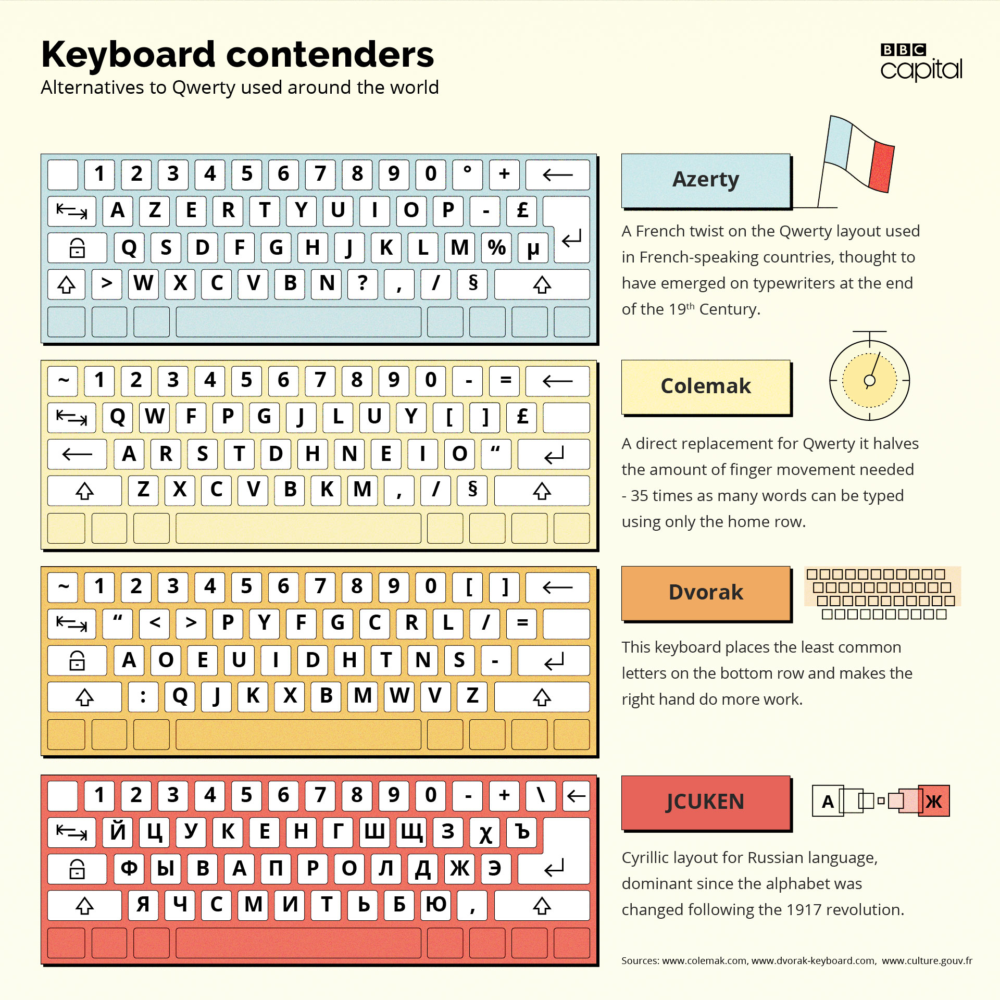

Barbara Blackburn could type so fast that computers struggled to keep up.
“She’d write and then she’d wait two to three minutes for the computer to type out what she had written,” explains Linda Lewis, the Founder of Keytime, a Seattle-based typing school.
It was the early 1990s, when computers were sluggish and software could be temperamental. But Blackburn was a Guinness World Record holder. She could maintain 150 words per minute for 50 minutes with a peak speed of 212 words per minute – that is faster than most people speak. The other typists in the Oregon insurance office where she regularly worked were jealous, says Lewis.
But rather than using the traditional Qwerty keyboard most computer and typewriter users over the past century will be familiar with, Blackburn used an alternative layout known as Dvorak. Lewis saw Blackburn in action after hiring her to showcase the keyboard at a technology conference in Seattle.
The Dvorak has a cult following. Its supporters say it’s faster, easier to learn and better for your poor, overworked fingers. They say 70% of keystrokes are on the home row – the keys where typists rest their fingers – on the Dvorak, versus 31% on a Qwerty. They say you can type thousands of words on a Dvorak’s home row, but only a few hundred on a Qwerty’s. They cite studies showing its superiority. They point to Barbara Blackburn.
But it’s all in vain. Qwerty is king. Not, it’s critics say, because it’s the best, but because changing is just too difficult and costly.
“Qwerty is a pile of garbage from the 1800s and you shouldn’t use it. It’s bad for your hands,” says Alec Longstreth, a cartoonist who now lives in New Mexico.
He’s a Dvorak true believer and evangelist. After learning how to use one in college in the 1990s, he told everyone about it. He was overzealous, and “a jerk about it”, because he couldn’t fathom why anyone would use Qwerty. Along with two friends, he created a fanzine to spread the word. Thousands were printed, and the three friends lost money on every copy – such is the passion Dvorak inspires among its users.
“It’s aggravating,” says Longstreth. “Can you imagine there was some other means of transport that was 70% more efficient than driving a car. You’d think ‘what are all these morons doing driving a car?’” He eventually gave up trying to spread the word because he found it tiring being a technological Cassandra, forever shouting at deaf ears in online forums.
LINK